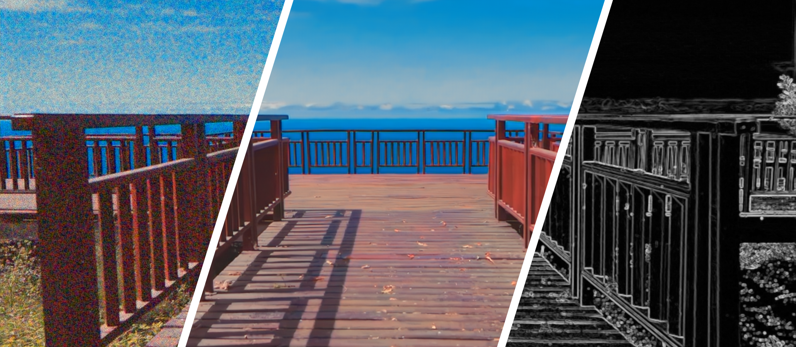

Multi-Stage Raw Video Denoising with
Adversarial Loss and Gradient Mask
The IEEE International Conference on Computational Photography (ICCP 2021)
-
Avinash Paliwal
Texas A&M University -
Libing Zeng
Texas A&M University -
Nima Khademi Kalantari
Texas A&M University


Abstract
In this paper, we propose a learning-based approach for denoising raw videos captured under low lighting conditions. We propose to do this by first explicitly aligning the neighboring frames to the current frame using a convolutional neural network (CNN). We then fuse the registered frames using another CNN to obtain the final denoised frame. To avoid directly aligning the temporally distant frames, we perform the two processes of alignment and fusion in multiple stages. Specifically, at each stage, we perform the denoising process on three consecutive input frames to generate the intermediate denoised frames which are then passed as the input to the next stage. By performing the process in multiple stages, we can effectively utilize the information of neighboring frames without directly aligning the temporally distant frames. We train our multi-stage system using an adversarial loss with a conditional discriminator. Specifically, we condition the discriminator on a soft gradient mask to prevent introducing high-frequency artifacts in smooth regions. We show that our system is able to produce temporally coherent videos with realistic details. Furthermore, we demonstrate through extensive experiments that our approach outperforms state-of-the-art image and video denoising methods both numerically and visually.
Results
Synthetic

Real

Technical Video
BibTeX
@InProceedings{paliwal2021maskdenosing, title={Multi-Stage Raw Video Denoising with Adversarial Loss and Gradient Mask}, author={Paliwal, Avinash and Zeng, Libing and Kalantari, Nima Khademi}, booktitle={2021 IEEE International Conference on Computational Photography (ICCP)}, year={2021}, pages={1-10}}
Acknowledgements
We thank the ICCP reviewers for their comments and suggestions. The synthetic test dataset was collected from YouTube channels Video Library - No copyright Footage, Le Monde en Vidéo and Underway, all under Creative Commons (CC) license. The website template was borrowed from Michaël Gharbi.